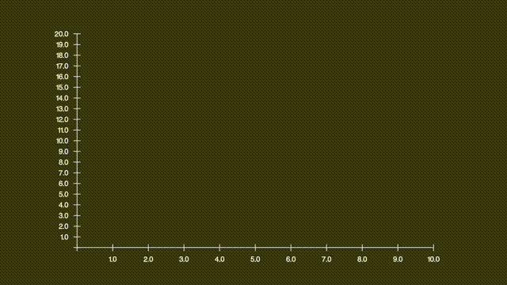
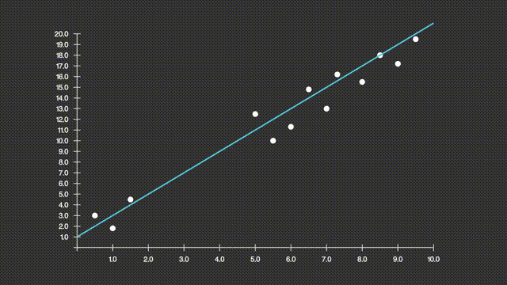
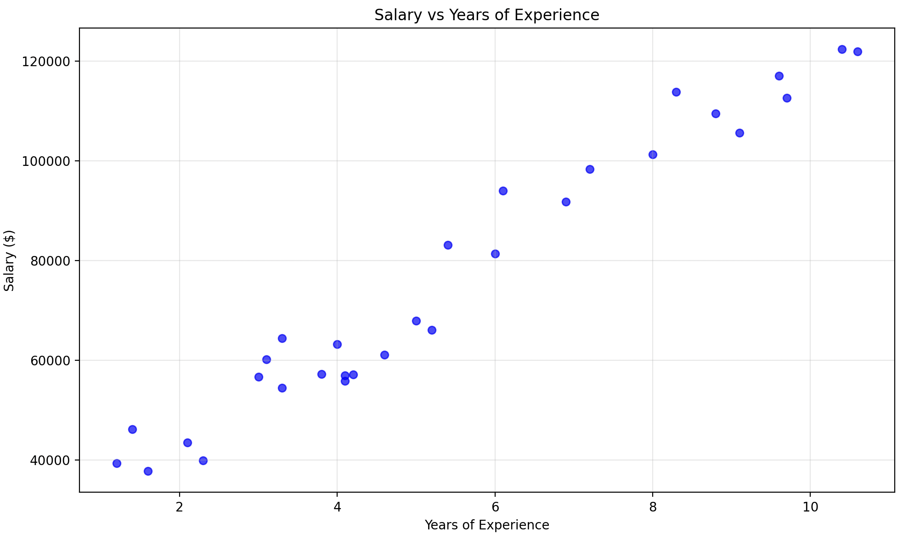
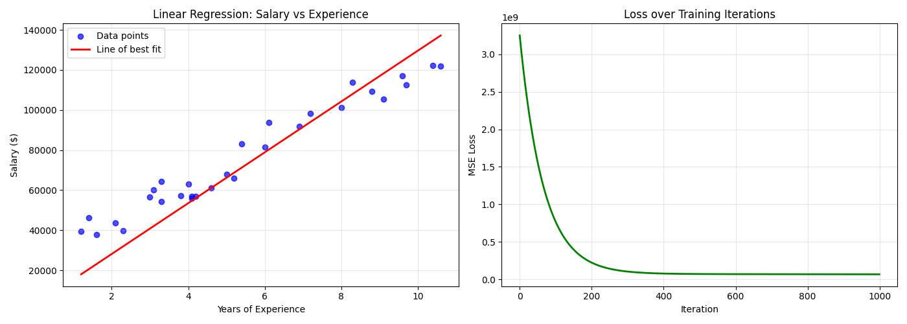

01 - Linear regression
2026-01-31
Problem
Suppose you are trying to determine the relationship between a person's height and their shoe size. You would like to answer the question: Given a person's shoe size \(X\), what do I expect their height \(Y\) to be?
Linear regression tries to answer this by creating a line of best fit between your independent variable(s) \(X\) and your dependent variables (\(Y\)).
This linear line of best fit will have the following shape:
where \(\hat{Y}\) represents the hypothesis height for our given \(X\). Here \(\theta_{1}\) is the gradient of the line and \(\theta_{0}\) the intercept on the y-axis.
This is illustrated in the following animation:

So to find the line of best fit, we need to determine the optimum values for \(\theta_{0}, \theta_{1}\).
Geometricaly, as noted by the yellow lines, the line of best fit actually as the smallest distance between the line and \(Y\) coordinate.

Hence, if we try to reduce that distance, we will get the line of best fit.
For each \(y_{i} \in Y\), the distance between \(y_{i} - \hat{y{i}}\) can either be negative or positive. We can square the distance so that we always have a positive distance. This will prevent negative distances cancelling out the work of reducing the parameters \(\theta_{0}, \theta_{1}\).
Mean Square Error
Thus, what we are trying to do is find the smallest average of all the distances \(y_{i} - \hat{y_{i}}\). This is know as the Mean Square Error.
More formally, we can write:
where the last equality holds by (1) above.
Hence, we can create the following cost function:
As you can see, \(J\) only has 2 variables (namely \(\theta_{0}, \theta_{1}\)), we can treat \(X, Y\) as constants.
If we were to plot a 3-D graph of \(f: (\theta_{0}, \theta_{1}) \rightarrow J(\theta_{0}, \theta_{1})\), it will look something like
This 3-D parabolic surface has a clear minima. This minima represents the the lowest cost (z-axis).
Suppose we start with arbitrary point on the surface, then we would try to iterate moving towards the minima of the surface as illustrated. This is known as Gradient Descent and is a very common technique in optimization to determine best solutions to cost functions.
Note: This works here because the surface has a nice shape, namely it is convex, which means that the second derivative is not negative. This means we can always descend closer to the minima of the cost. Other projections of cost functions are concave, which makes it impossible to apply gradient descent.
Derivation
For each variable \(\theta_{0}, \theta_{1}\), we need to
- find the gradient at that point with respect to the given variable.
- move some amount in a negative (towards the minima) of the surface.
More formally, this can be written as
where \(\alpha\) is a hyperparameter that represents the rate at which we move towards the minima.
Let's derive the partial derivatives!
Looking at \(\theta_{0}\) initially:
as defined in (2).
Let \(u =\frac{1}{m}\sum_{i=1}^{m}(Y - \theta_{1}X + \theta_{0})\), and so \(\frac{\partial{u}}{\partial{\theta_{0}}} = -1\), then by the Chain Rule:
Here \(\frac{\partial{J(u)}}{\partial{u}} = 2m\) since we are summing across all points.
Finally, we substitute \(u\) to get
Similarly for \(\theta{1}\):
as defined in (2).
Let \(u =\frac{1}{m}\sum_{i=1}^{m}(Y - \theta_{1}X + \theta_{0})\), and so \(\frac{\partial{u}}{\partial{\theta_{1}}} = -X\), then by the Chain Rule:
Here again, \(\frac{\partial{J(u)}}{\partial{u}} = 2m\) since we are summing across all points.
Finally, we substitute \(u\) to get
Therefore, overall we have the following:
Since \(\alpha\) is arbitrary, we can omit the \(\frac{2}{m}\).
Code
Let's look at a real example in Python. We will look at at Salary Dataset from kaggle.com.
For this, you will require
matplotlib
numpy
pandas
The data looks as follows:
import pandas as pd
import matplotlib.pyplot as plt
# Read the salary dataset
df = pd.read_csv('path/to/salary.csv')
X = df['YearsExperience'].to_numpy()
y = df['Salary'].to_numpy()
# Create scatter plot
plt.figure(figsize=(10, 6))
plt.scatter(df['YearsExperience'], df['Salary'], color='blue', alpha=0.7)
plt.xlabel('Years of Experience')
plt.ylabel('Salary ($)')
plt.title('Salary vs Years of Experience')
plt.grid(True, alpha=0.3)
plt.tight_layout()
plt.savefig('salary_plot.png')
plt.show()
This should look something like:

Let's initialize \(\theta_{0}, \theta_{1}\) and apply gradient descent
# previous part above
# Initialize parameters
theta_0 = 0.0 # y-intercept
theta_1 = 0.0 # gradient
alpha = 0.0001 # learning rate
n_iterations = 1000
m = len(X) # number of samples
# Store loss history
losses = []
# Gradient descent
for i in range(n_iterations):
# Predictions
y_pred = theta_0 + theta_1 * X
# Calculate MSE loss
loss = (1 / m) * np.sum((y - y_pred) ** 2)
losses.append(loss)
# Calculate gradients
d_theta_0 = (-2 / m) * np.sum(y - y_pred) # equation 6
d_theta_1 = (-2 / m) * np.sum((y - y_pred) * X) # equation 7
# Update parameters
theta_0 = theta_0 - alpha * d_theta_0 # equation 8
theta_1 = theta_1 - alpha * d_theta_1 # equation 9
The plot below shows the loss and the line of best fit:

So there you have it, linear regression explained from first principles!
More discussion
It is worth mentioning that choosing a right learning rate \(\alpha\) is crucial to help performance.
A too small will take too long, a too big may oscillate or diverge (miss the minima completely). The following is a rule of thumb:
| Learning rate | Behavior |
|---|---|
| Very small (e.g. 0.0001) | Slow convergence |
| Moderate (e.g. 0.01) | Stable, efficient learning |
| Large (e.g. 1.0) | Divergence / oscillation |
← Maths behind ML and AI | 02 - Feed-forward Neural Network →